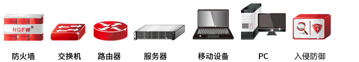

l约定
本文档遵循以下约定。
1）图形界面操作的描述采用以下约定：
格式 |
说明 |
|---|---|
【XX】 |
表示按钮。如：点击【XX】按钮。 |
“” |
表示页面内容引用。如：激活“XX”页签，弹出“XX”窗口，在下拉框中选择“XX”参数。 |
> |
分隔多个菜单项，且此时菜单项采用“菜单命令”格式。 如：点击（选择） 。 |
< > |
带尖括号表示键盘按钮名。如：按 <Ctrl> + <Alt> 即可。 |
2）章节标识符采用以下约定：
格式 |
说明 |
|---|---|
带*号 |
表示该章节内容非标准配置内容，为附加说明内容。 |
3）为了叙述方便，本文档采用了少量网络拓扑图，图中的图标指明了天融信和通用的网络设备、外设和其他设备，以下图标注释说明了这些图标代表的设备：

4）文档中出现的说明、注意、示例等标志，是关于管理员在安装和配置NGFW过程中需要特别注意的部分，请管理员在明确可能的操作结果后，再进行相关配置。这些标志的意义如下：
格式 |
说明 |
|---|---|
|
“说明”图标，对操作内容的描述进行必要的补充和说明。 |
|
“注意”图标，提醒操作中应注意的事项，不当的操作可能会导致数据丢失或设备损坏。 |
|
“示例”图标，对相关描述进行举例说明。 |


l文档意见反馈
如果您在阅读过程中发现文档的任何问题，可通过服务热线或电子邮件（plm_prm_doc@topsec.com.cn）的方式进行反馈。感谢您的反馈，让我们做得更好！
l声明
1．本文档（编号：V3.2406.37098）中所提到的产品规格及资讯仅供参考，有关内容可能会随时更新，天融信不另行通知。
2．本文档中没有任何关于其他同类产品的对比或比较，天融信也不对其他同类产品表达意见，如引起相关纠纷应属于自行推测或误会，天融信对此没有任何立场。
3．本文档中提到的信息为正常公开的信息，若因本文档或其所提到的任何信息引起了他人直接或间接的资料流失、利益损失，天融信及其员工不承担任何责任。
4．本产品生命周期结束后，如需报废，请联系具有电子产品报废处理资质的厂家进行处理。